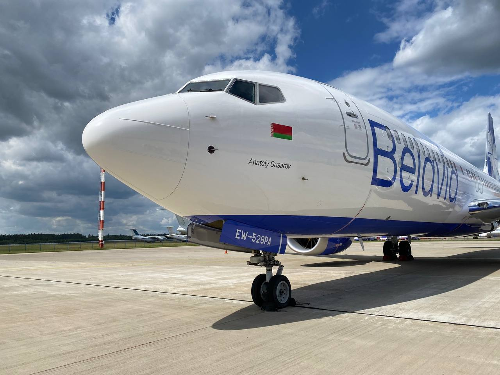

Белавиа (Открытое акционерное общество «Авиакомпания Белавиа») — национальная авиакомпания Республики Беларусь. Штаб-квартира находится в Минске, базовый аэропорт - Национальный аэропорт Минск.
У авиакомпании 17 представительств в странах ближнего и дальнего зарубежья, а с 1997 года «Белавиа» является членом международной организации авиаперевозчиков IATA.
Авиакомпания «Белавиа» владеет парком из 28 авиалайнеров западного и российского производства. На сегодняшний день авиапарк «Белавиа» состоит из самолетов Boeing 737-800/500/300, CRJ-100/200 LR, Embraer 195/175 и Ту -154 М.
Самолеты авиакомпании Belavia соответствуют требованиям общемировых авиационных стандартов и могут выполнять полеты в страны ближнего и дальнего зарубежья.